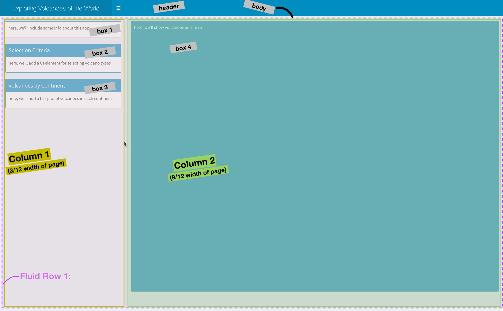
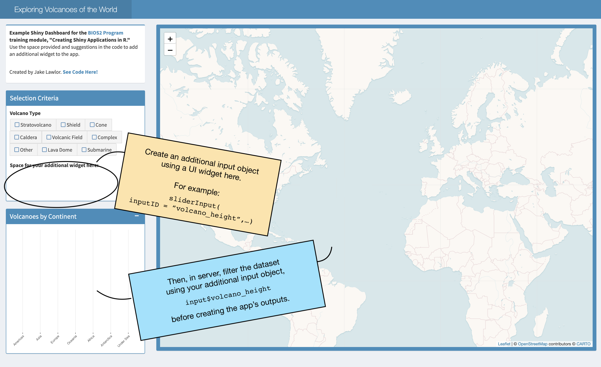

# load packages
library(shiny)
library(shinydashboard) # dashboard layout package
library(shinyWidgets) # fancy widgets package
library(leaflet) # interactive maps package
library(dplyr)
library(ggplot2)Constructing an App
Taking advantage of good defaults
Here, we will use shiny extension shinyDashboards and leaflet to construct a custom Shiny App to map volcanoes of the world. First, we need a few additional packages.
Note: All Source code for this app can be found here on the BIOS2 Github.
Using ShinyDashboard
We will create our app using defaults from the ShinyDashboard package, which always includes three main components: a header, using dashboardHeader(), a sidebar, using dashboardSidebar(), and a body, using dashboardBody(). These are then added together using the dashboardPage() function.
Building these elements is less like usual R coding, and more like web design, since we are, in fact, designing a unser interface for a web app. Here, we’ll make a basic layout before populating it.
# create the header of our app
header <- dashboardHeader(
title = "Exploring Volcanoes of the World",
titleWidth = 350 # since we have a long title, we need to extend width element in pixels
)
# create dashboard body - this is the major UI element
body <- dashboardBody(
# make first row of elements (actually, this will be the only row)
fluidRow(
# make first column, 25% of page - width = 3 of 12 columns
column(width = 3,
# Box 1: text explaining what this app is
#-----------------------------------------------
box( width = NULL,
status="primary", # this line can change the automatic color of the box.
title = NULL,
p("here, we'll include some info about this app")
), # end box 1
# box 2 : input for selecting volcano type
#-----------------------------------------------
box(width = NULL, status = "primary",
title = "Selection Criteria", solidHeader = T,
p("here, we'll add a UI element for selecting volcano types"),
), # end box 2
# box 3: ggplot of selected volcanoes by continent
#------------------------------------------------
box(width = NULL, status = "primary",
solidHeader = TRUE, collapsible = T,
title = "Volcanoes by Continent",
p("here, we'll add a bar plot of volcanoes in each continent")
) # end box 3
), # end column 1
# second column - 75% of page (9 of 12 columns)
#--------------------------------------------------
column(width = 9,
# Box 4: leaflet map
box(width = NULL, background = "light-blue", height = 850,
p("here, we'll show volcanoes on a map"),
) # end box with map
) # end second column
) # end fluidrow
) # end body
# add elements together
dashboardPage(
skin = "blue",
header = header,
sidebar = dashboardSidebar(disable = TRUE), # here, we only have one tab of our app, so we don't need a sidebar
body = body
)
Populating the Layout
Now, we are going to fill out app with elements. In this app, we will only have one user input: a selection of the volcano type to show. We will use this input (input$volcano_type), which will be used to filter data in the server (i.e. make a smaller dataset using only volcanoes of the selected types), then use this filtered dataset to create output elements (plots and maps).
Below, we show the necessary code to include in both the UI and the Server to create each plot element. Notice that after the reactive value selected_volcanoes is created in the selection box, this is the only object that is used to create the other elements in the app.
| Location | Element | UI | Server |
|---|---|---|---|
| Box 1 | Intro Textbox | Markdown/HTML text code | |
| Box 2 | Selection Wigets | checkboxGroupButtons( inputID = "volcano_type") |
selected_volcanoes <- reactive({ volcano_df %>% filter(type %in% input$volcano_type)}) to create a filtered dataset that will react to user input |
| Box 3 | Bar Graph | plotOutput("continentplot") |
output$continentplot <- renderPlot(...)) which will plot from the selectied_volcanoes reactive object |
| Box 4 | Leaflet Map | leafletOutput("volcanomap") |
output$volcanomap <- renderLeaflet(...) to map points from the selectied_volcanoes reactive object |

Challenge!
Use the code provided to add your own additional user input to the Shiny App. The code (which you can access here leaves a space for an additional UI input inside box 2). Then, you’ll need to use your new input element to the reactive value in the Server, as noted in the server code.
Use the Default Shiny Widgets or shinyWidgets extended package galleries to explore the types of elements you can add.
